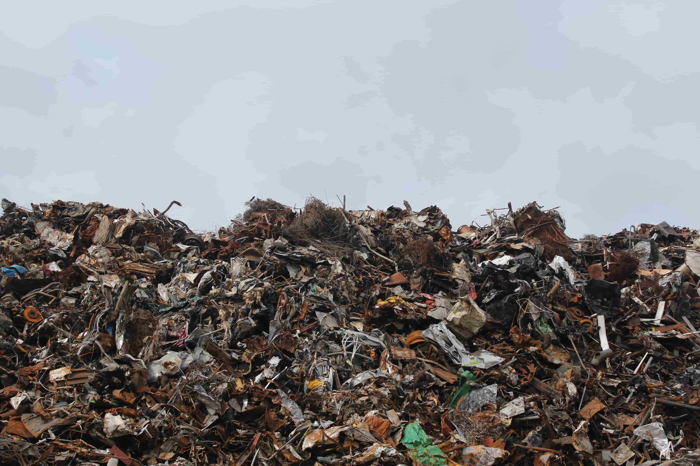
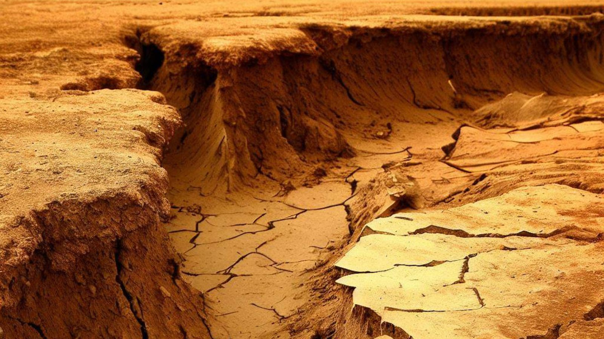

Australia, a land of natural beauty and diverse culinary delights, is unluckily going through a sizable undertaking: meals waste. In a world where assets are treasured and starvation remains a crucial trouble, information why Australia wastes a good sized quantity of meals is important. This article delves into the astonishing facts, eye-beginning information, and underlying reasons behind this difficulty, dropping mild on the significance of decreasing meals waste.
The numbers surrounding food waste in Australia are clearly wonderful. According to current studies, a shocking 38% of all meals produced in the us of a goes to waste. This is not just a local trouble; globally, around 35% of produced meals is wasted. These meals waste statistics are alarming, particularly whilst considering the 720 searches consistent with month for "food waste facts" on my own.
Numerous elements contribute to the high quotes of food waste in Australia. The demand for best-searching produce frequently ends in the rejection of 'imperfect' fruits and vegetables, contributing to a full-size part of wastage. Additionally, consumers' converting alternatives and shopping for habits play a role. The dependancy of overbuying at some point during income or promotions and then discarding the excess is a standard issue.
The meals enterprise bears its fair percentage of obligation for Australia's remarkable food waste figures. Supermarkets and restaurants, driven by superficial aesthetic standards or stock mismanagement, regularly discard perfectly edible meals. Throughout the production method, inefficiencies in the deliver chain, such as subpar storage or transportation practices, similarly exacerbate the trouble, main to pointless wastage.
The outcomes of food waste make bigger beyond the kitchen. Not simplest does it squander precious sources like water and energy utilized in production, however it additionally significantly contributes to greenhouse fuel emissions because the discarded food breaks down in landfills. Furthermore, at the same time as we waste food, tens of millions around the sector move hungry, emphasizing the moral responsibility to address this problem.
Efforts to reduce food waste in Australia have received momentum. Organizations, restaurants, and individuals are taking steps to address this task. Initiatives which includes redistributing surplus meals to the ones in want, adopting modern packaging to increase shelf lifestyles, and educating clients about right meal making plans and garage are making a distinction.
Australia's meals waste issue is a complex venture with some distance-attaining implications. By acknowledging the shocking data and figures surrounding food waste, we take a step toward alternate. It's time for individuals, communities, and policymakers to come together and put in force sustainable practices that now not best reduce meals waste but additionally ensure a brighter, extra food-stable destiny for all.